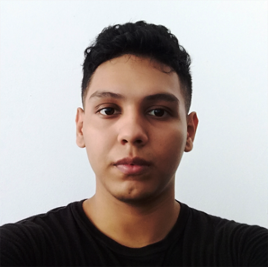

Curriculum Vitae
Yosstin Steven Castillo Ramirez
18 años - Estudiante

Descripcion personal
-
Me gusta considerarme una persona muy curiosa por el conocimiento, tambien soy muy dedicada cuando de cosas que de verdad me gusta se trata, me gusta la programacion desde pequeño pero nunca se me planteo un futuro con ella por desconocimiento y aun asi segui aprendiendo mucho por mi cuenta, me gusta considerarme tambien soñador y romantico, me gusta la lectura y soy amante del frio.
Educacion
-
tecnologo en gestion del talento humano en el Servicio nacional de aprendizaje año 2020
-
Bachiller en la institucion educactiva la paz Nº1 año 2017
Experiencia laboral
-
cuento con 6 meses de experiencia laboral en el area de gestion del talento humano del Club Puerto Peñalisa.
desde enero 17 del año 2020 hasta septiembre 4 del año 2020.
Habilidades duras
-
html basico
-
css basico
-
javascript basico
-
servicio al cliente.
Habilidades blandas
-
adaptabilidad
-
creatividad
-
resposabilidad
-
pensamiento critico
Pasatiempos
-
lectura me encanta leer algun que otro libro, novelas chinas y japonesas, algunos comics, manga.
-
Musica toco la guitarra aun soy un principiante pero es placentero ver como poco a poco voy sonando mejor y entender la profundidad de los diferentes acordes y su razon de estar donde estan.
-
ver series, peliculas y anime.
-
videojuegos mobiles.
¿Porque estudio esta carrera?
-
existen muchas razones para llamar a las carreras tech como las mas recomendables a estudiar y seguir, pero en mi caso fue mas el sentimiento de !wow¡ que me provoca despues de resolver problemas de codigo y esa lucha de: "bueno si lo hago asi deberia ir por este camino" y terminar en un lugar diferente y que todo se destroce y te toque retormas mas atras esa lucha tediosa que llaman todos me gusta me es interesante porque me pone a pensar me pode abuscar e investigar y puedo hacerlo por horas sin necesidad de mayor esfuerzo y eso me encanta no me es agobiante para nada por eso decidi esta carrera porque simplemente es lo que me gusta lo que quiero para mi vida.